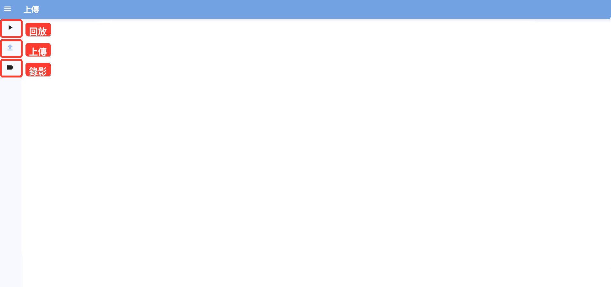

開始使用
關於百米分析
百米分析提供兩種建立分析紀錄的方式：上傳既有影片，或在現場同步錄影並上傳。分析完成後，可在回放頁查看結果。

上傳影片
選擇影片檔案，設定跑者、日期、FPS、備註與錨點後送出分析。
現場錄影上傳
讓多台裝置加入同一個房間，由主控裝置同步開始與停止錄影，錄完後自動上傳。
查看結果
分析完成後，在回放頁查看影片、圖表與歷史紀錄。
提示：在手機直式畫面中，請使用底部圖示切換頁面。在平板、電腦或橫向畫面中，請點選左上角選單，再從側邊欄切換頁面。